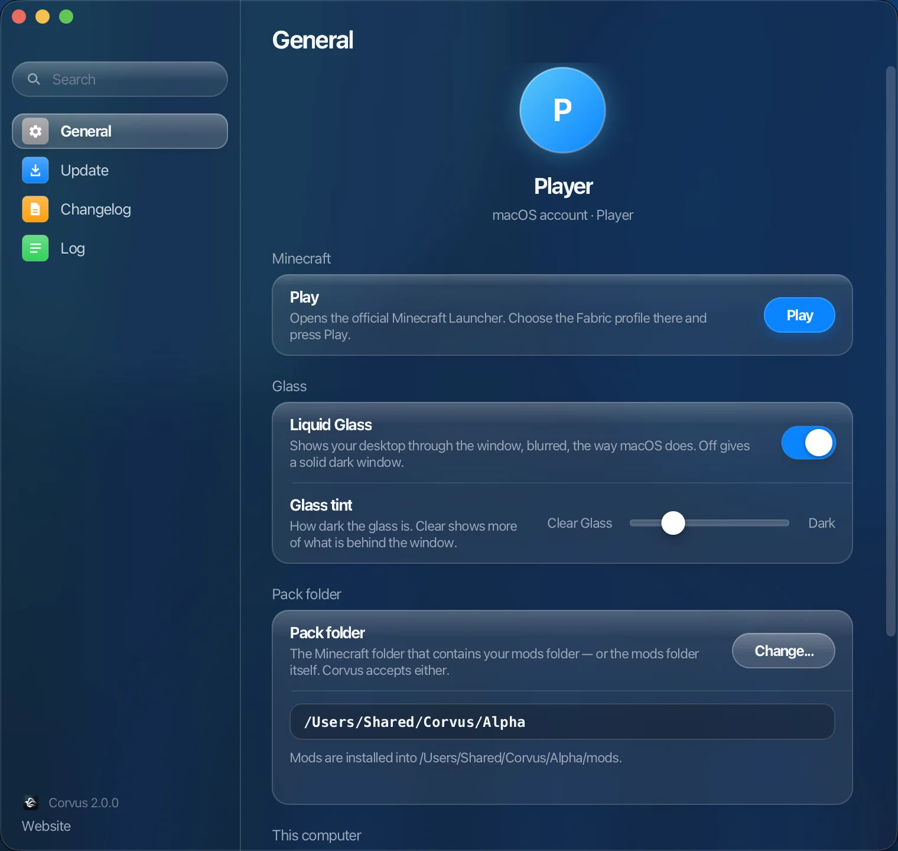
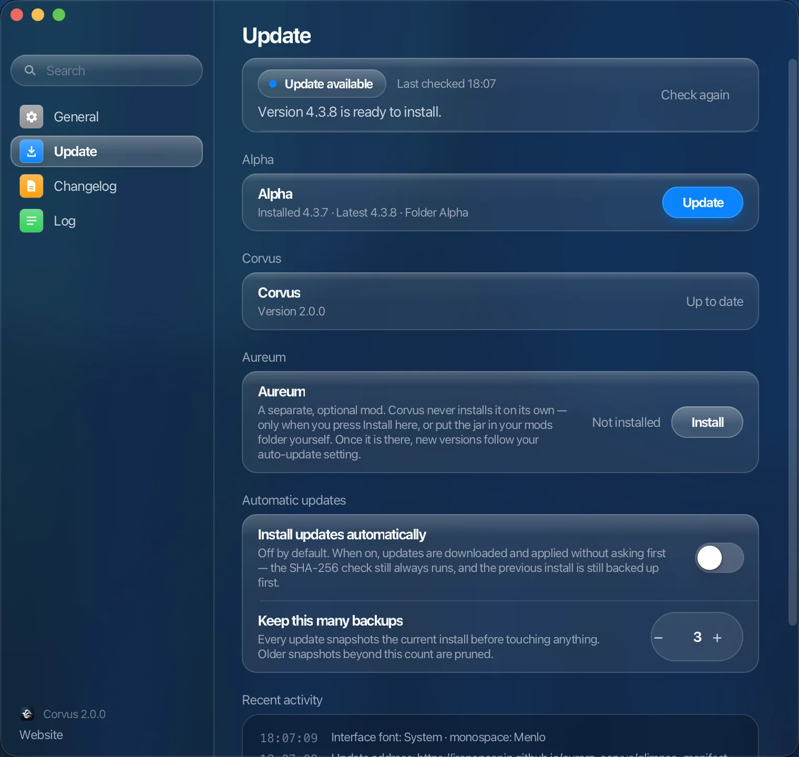
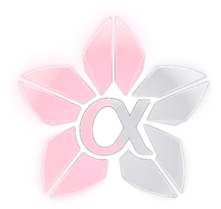

Corvus
Лаунчер для Alpha.
Весь пак, в одном окне.
Corvus устанавливает Alpha, 13 модулей одной версии, и держит его актуальным. На macOS окно — настоящее стекло: сквозь него, размытым, виден рабочий стол.

Всегда актуально.
Новый Alpha — в одном нажатии. С включёнными автообновлениями он приходит сам.

Проверено до того, как тронут хоть один файл.
Каждое обновление следует одним и тем же трём правилам.
SHA-256
Каждая загрузка сверяется со своей контрольной суммой. Если она не совпадает, установка не выполняется.
Сначала резервная копия
Текущая установка сохраняется до того, как что-либо будет изменено.
Один переключатель
Автообновления — одна настройка. По умолчанию выключена.
Четыре бренда.
OUKA, Cherry и Alpha — именно в этом порядке уровней. Aureum — мод другого рода, со своей версией.

OUKA Высший уровень — выше Cherry. Уже скоро. Cherry Уровень выше Alpha. Устанавливается рядом с Alpha и развивается в собственной версии. Alpha Сам пак. 13 модулей, одна версия; Corvus устанавливает его и держит актуальным. Aureum
Отдельный необязательный мод. Устанавливается только по вашему выбору и с тех пор держится актуальным.
Aureum
Отдельный необязательный мод. Устанавливается только по вашему выбору и с тех пор держится актуальным.